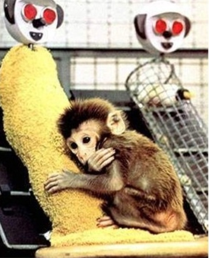
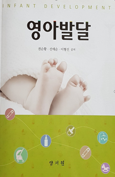

애착의 형성 및 유형의 의의
영아의 애착형성은 개인차를 보이는데 에인즈워스와 동료들(Ainsworth et al., 1978)는 ‘낯선 상황실험’을 실시하여 애착 유형을 나뉘었다. 이 실험 과정은 에피소드를 여덟 가지로 구성하여 영아의 반응을 기록하고 분석하였다. 애착의 유형은 안정 애착과 불안정 애착으로 구분되며, 불안정 애착은 다시 회피 애착, 저항 애착, 혼란 애착으로 분류된다.

1) 안정 애착
안정 애착 유형의 영아는 어머니와 함께 있을 때는 어머니를 안전기지로 사용하여 놀잇감에 몰두하고, 주위를 탐색하기 위해 어머니로부터 쉽게 떨어진다. 어머니가 곁에 있으면 낯선 사람에게도 친근한 행동을 보이며, 친숙한 상황에서는 어머니가 잠시 떠나 있는 것에 대해 크게 불안을 느끼지 않는다. 이들은 어머니가 돌아오면 반갑게 맞이하고, 적극적으로 접촉을 시도하며, 어머니의 위로를 받으면 쉽게 편안해진다. 연구대상의 65% 정도가 이 유형에 해당한다.
2) 불안-회피 애착
불안-회피 애착(anxious-avoidance attachment) 유형은 어머니와 단 둘이 있을 때에도 어머니에게 별 반응을 보이지 않는다. 이들은 어머니가 방을 떠나도 울지 않고, 고통스러워하지 않으며 어머니가 돌아와도 무시하거나 피해버린다. 어머니와의 관계에서 친밀감을 추구하지 않으며, 낯선사람에 대해서도 특별히 경계하지 않고 어머니와 비슷하게 대한다. 또한 어머니가 안아주려고 하면 대체로 안기지 않는다. 연구대상의 20% 정도가 이 유형에 해당한다.
3) 불안-저항 애착
불안-저항 애착(anxious-resistant attachment) 유형은 어머니가 가까이 있어도 불안해 하며, 어머니 옆에 붙어서 가까이 머물려고만 하고 주변의 탐색을 하지 못한다. 어머니가 방을 나가면 심한 불리불안을 보인다. 어머니가 돌아오면 자신을 남겨 두고 떠났다는 것에 화를 내고, 어머니가 접근하여 접촉을 시도하여 안아주어도 어머니로부터 안정감을 얻지 못하고 분노를 보이면서 오히려 저항하는 태도를 보인다. 저항애착의 영아는 어머니가 있을 때에도 낯선 사람을 경계한다. 연구대상의 10~15% 정도가 이 유형에 해당한다.
4) 불안-혼란 애착
불안-혼란 애착(anxious-disorganized attachment) 유형은 회피애착과 저항애착이 결합된 것으로 불안정 애착의 가장 심한 형태이다. 낯선 상황에서 스트레스를 받고 가장 불안정한 행동을 보인다. 어머니와 떨어졌다가 재결합했을 때, 어머니에게 접근할지 혹은 회피할지에 대한 극도의 두려움을 나타난다. 영아는 굳은 표정으로 어머니에게 접근하거나 어머니가 안아줘도 관심을 보이지 않는다. 연구대상의 5~10% 정도가 이 유형에 해당한다.
애착 유형과 형성에 미치는 요인
애착 형성은 영아의 특성, 어머니의 특성, 그리고 어머니와의 상호작용에 의한 양육의 질을 들 수 있다.
첫째, 영아의 특성으로 조숙아, 미숙아로 태어난 경우 보육기에서 자라게 되므로 생의 초기에 불안정애착을 형성할 가능성이 높다(Mangelsdorf et al., 1995). 영아의 기질적 특성은 자극에 대해 활발하게 반응하지 못하는 경우 불안정애착을 형성할 수 있다.
둘째, 어머니의 특성은 어머니의 낮은 연령, 낮은 사회경제적 지위 등 다양한 스트레스로 인해 정서적으로 불안정하거나 우울한 어머니는 영아의 신호와 요구에 민감하게 반응하지 못하여 영아와 안정된 애착을 형성하기 어렵다.
셋째, 어머니와의 상호작용에 의한 양육의 질은 어머니의 양육행동 중에서 특히 영아가 보내는 신호에 대한 민감성과 반응성은 애착형성의 가장 중요한 요소가 된다(Isabella, 1993; Stevenson-Hinde & Shouldice, 1995).
어머니가 영아의 정서적인 요구에 민감하게 반응하며 눈을 자주 맞추고, 미소를 많이 짓는 등 정서적인 표현을 많이 해 주면 영아는 안정된 애착을 형성하게 된다. 그러나 부모 역할에 자신감이 없고 영아에게 짜증과 화를 잘 내며 신체접촉을 회피하고 영아의 요구에 민감하게 반응하지 못할 경우 불안정애착을 형성하게 된다.
이와 같이 어머니의 양육행동이 애착형성에 영향을미치지만 영아의 기질 또한 어머니의 양육방식에 영향을 미친다. 까다롭고 화를 잘 내는 영아가 융통성이 적은 성격의 어머니로부터 양육을 받았을 때는 불안정애착을 형성하지만, 융통적인 성격으로 민감하게 반응해 주는 어머니의 양육에는 안정된 애착을 형성하는 경향이 높다. 안정된 애착을 형성하도록 하기 위해서는 영아의 기질을 잘 이해하고, 이에 적합한 조화로운 양육방식을 제공하는 것이 가장 필요하다.
출처 : 권순황, 선애순, 이형선 공저(2015), 영아발달. 양서원.

2021.11.28 - [분류 전체보기] - 프로이드의 발달 이론- 심리성적 발달 5단계
프로이드의 발달 이론- 심리성적 발달 5단계
심리성적 발달 5단계 프로이드(Sigmund Freud)는 성격발달 과정에서 중요한 영향을 미치는 성 에너지인 리비도의 과잉 및 충족 또는 좌절 및 고착에 따라 성격발달에 중요한 영향을 미친다고 주장
think-sis.tistory.com